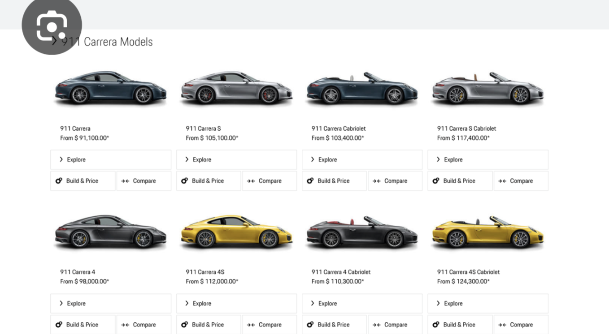
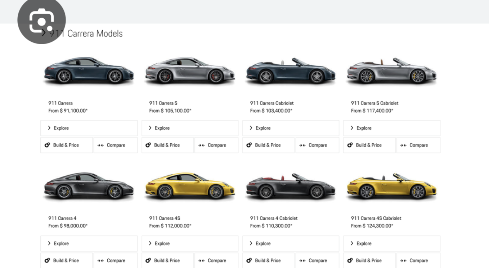

Just how fast is Porsche? Supercar!
 


Important facts about porsche:
"The 992 GT3 RS incorporates lightweight materials such as carbon fiber-reinforced plastic (CFRP) to reduce overall weight and enhance agility on the track."
- The 992 GT3 RS boasts advanced aerodynamics, featuring an enormous swan-neck rear wing and active aero elements. Its downforce at 124 mph (200 km/h) is 409 kg (902 lbs), nearly triple that of the 991.2 GT3 RS.
- The GT3 RS is inspired by Porsche's motorsport technology. It has a center-mounted radiator configuration, a concept borrowed from the Porsche 911 RSR and GT3 R race cars.
Track-Oriented Interior
Inside, you’ll find a stripped-down, functional cockpit with lightweight bucket seats, a roll cage (part of the Weissach package), and materials like Alcantara for a sporty feel.
The optional Weissach package takes performance further by adding more CFRP components, a carbon-fiber roll cage, and magnesium wheels to save additional weight.
Every detail on the GT3 RS is optimized for aerodynamics. Even the suspension arms are designed as wing profiles to contribute to overall downforce.